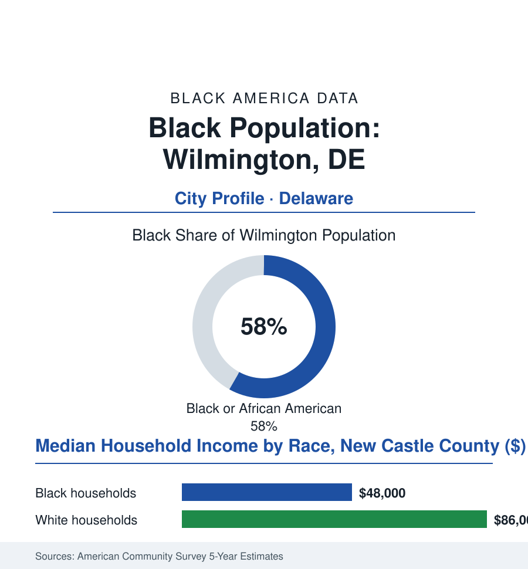

Black Cities
Black Wilmington: 41,000 People in the Small State's Big City
Wilmington holds a third of Delaware in one Black-majority city — a corporate capital whose downtown towers and East Side blocks tell two halves of one story.

Wilmington's Black community numbers roughly 41,000 people — about 58% of the city's 71,000 residents — in the largest city of the nation's second-smallest state, where one city holds a third of Delaware's Black population entire. It is a corporate capital built on chemistry and credit cards, and a Black city of deep institutions in the corporation's shadow. This article reads Wilmington's numbers.
The Company's City, the Community's Institutions
The towers came from the du Pont chemistry fortune and stayed for Delaware's corporate law (the Court of Chancery's worldwide franchise, the banks' card operations drawn by the state's financial deregulation — the downtown payrolls of lawyers, bankers, and chemists that make the county's white median what it is), and Black Wilmington built alongside from the start: the East Side and the West Side's historic blocks, the churches of a free-Black community older than the republic's middle (Delaware's slavery ending late and grudgingly — the state's Black church tradition, from the AUMP's founding generation, among the nation's oldest independent denominations in the faith data), Howard High School — the state's Black flagship, whose alumni rolls run the Delaware bench, bar, and legislature in the education file's small-state edition. The civil-rights geography here is the border state's own: a city that integrated its lunch counters and its flagship high school under the combined pressure of its own movement and its corporate image (the company's sensitivities a lever the local NAACP — among the nation's oldest branches — pulled with sophistication the histories record), and the 1968 occupation — the National Guard's nine-month presence after the King assassination, among the longest in any American city — standing in the record as the era's Delaware chapter, its memory still cited in the city's politics. The institutions compounded from that base: Delaware State University up the road in Dover absorbing the city's graduates, the Black professional class of the banks and the chemical firms thickening through the corporate decades, a Black mayor's office held across much of the modern era.
Two Economies, One Zip Code
The culture file keeps one of its brightest entries here: Clifford Brown, the trumpet's lost genius, was the East Side's own — the annual festival in his name now anchors the city's arts calendar on the blocks he grew up on — and the small-state intimacy runs through the whole civic data (a Black resident of Wilmington is never more than two introductions from the governor in the local saying, the legislature's Black caucus proportionately among the nation's stronger in a statehouse of this size). The business shelf is correspondingly personal: Market Street's Black-owned blocks redeveloping in the current plans, the barbershop-and-broker economy of a city where reputation is a small-town instrument — the entire atlas, in Wilmington, at walking scale.
The present data state the paradox in the atlas's purest small-state form: a county median pulled high by the corporate payrolls and a city Black median in the survey data near fifty thousand, the poverty row deep in the East Side and Southbridge blocks — the same downtown, the same riverfront renaissance (the Christina's banks converted to the county's playground, its benefits' geography the development file's standard audit), the neighborhoods across the tracks carrying the environmental and vacancy rows (the chemical corridor's legacy in the soil-and-air data of the South Wilmington wetlands, the state's environmental-justice mapping drawn substantially around this city's Black wards). The employers are the region's whole economy in miniature: the hospitals, the university's city campus, the banks' back offices, the port on the Delaware — and the public sector, Delaware's smallness making state government a hometown employer in the public-workforce file's sense. The city's forward rows are the small state's leverage plays: the corporate-law franchise's stability funding the tax base, the HBCU pipeline in Dover, the riverfront's second act — and the persistent question the ward maps ask, of whether a city this Black, governing itself this long, can finally convert the corporation's rents into the neighborhoods' capital. The counting, at least, is unambiguous: in a state of a million, this one city's Black community is a third of the whole people's presence — a weight no Delaware decision can be made around.
Reading Wilmington's Numbers
Forty-one thousand people in the small state's big city: Wilmington is the cities file's study in proximity — the corporate boardroom and the East Side within one mayor's jurisdiction, the nation's corporate law written a mile from some of its oldest Black churches. The census counts both. The city has always lived as one number.
More in Black Cities
Black Atlanta: Population, Distribution, and Growth of a Black Metropolis
Metro Atlanta holds more than two million Black residents — roughly one in three, second only to New York. The suburban distribution, migration history, and composition of Black Atlanta in the census data.
Black New York: The Largest Black Population in America
The New York metropolitan area holds about 3.4 million Black residents — more than any metro in the nation — and the city itself about two million. The census profile.
Black Washington: The District and the Metro
The Washington metro holds about 1.6 million Black residents, and the District itself — long a majority-Black city — now records a Black share near 41 percent. The census profile.
Source: U.S. Census Bureau, 2020 Census and American Community Survey 5-year estimates; City of Wilmington; Delaware State Housing Authority.